Document Control
| Version | Date | Action | Remark |
|---|---|---|---|
| 1.0 | 16 Nov 2026 | จัดทำเอกสารอบรมฉบับแรก | ครอบคลุมวิธีใช้งานทั่วไป การสร้าง Role การสร้าง User และการสร้าง User Group พร้อมภาพประกอบทุกขั้นตอน |
บทที่ 1 ภาพรวมระบบสิทธิ์
ระบบ UBO Verification System ใช้โมเดลสิทธิ์ 4 ชั้น ได้แก่ User, Group, Role และ Permission ผู้ใช้จะได้รับสิทธิ์ผ่านกลุ่มเท่านั้น กลุ่มหนึ่งถือ Role หนึ่งบทบาท และ Role ประกอบด้วยสิทธิ์หรือ Permission หลายรายการ
1.1 ลำดับชั้นสิทธิ์
| ลำดับชั้น | คำอธิบาย |
|---|---|
| User | บัญชีผู้ใช้รายบุคคล สร้างอัตโนมัติเมื่อเข้าสู่ระบบครั้งแรก |
| Group | กลุ่มผู้ใช้ เช่น Analysts, Reviewers, Administrator ผู้ใช้หนึ่งคนอยู่ในกลุ่มเดียวตามกฎของระบบ |
| Role | บทบาทที่กำหนดชุดสิทธิ์ เช่น UBO_MAKER, UBO_CHECKER แต่ละ Role มีลำดับความสำคัญ Priority |
| Permission | สิทธิ์รายรายการ เช่น ubo:search, history:view รวมเป็น 42 รายการแบ่งเป็น 4 กลุ่มฟังก์ชัน |
1.2 กลุ่มฟังก์ชันของสิทธิ์
| กลุ่มฟังก์ชัน | จำนวนสิทธิ์ | ครอบคลุม |
|---|---|---|
| ubo | 7 | การค้นหาและดูผลการวิเคราะห์ |
| history | 4 | การดูและ Export ประวัติการค้นหา |
| waiting | 2 | การดูหน้ารอและมอบหมายกลุ่ม |
| settings | 29 | การตั้งค่าระบบ ผู้ใช้ กลุ่ม สิทธิ์ และ logs |
1.3 บทบาทที่มีอยู่ในระบบ ณ วันที่ 16 พฤศจิกายน 2569
| Role | Priority | จำนวนสิทธิ์ |
|---|---|---|
| IT-SEC | 1000 | 13 |
| ROOT | 1000 | 42 |
| UBO_ADMIN | 100 | 30 |
| UBO_MAKER | 70 | 10 |
| UBO_ANALYST | 70 | 8 |
| UBO_CHECKER | 40 | 10 |
| UBO_REVIEWER | 40 | 4 |
| UBO_VIEWER | 10 | 7 |
| VIEWER | 10 | 2 |
| DEFAULT | 5 | 1 |
ตัวเลขบทบาทและสิทธิ์มาจากระบบจริง ณ วันที่จัดทำเอกสาร หากมีการแก้ไข Role ผ่านหน้าจอ ตัวเลขอาจเปลี่ยนได้ ให้ตรวจสอบล่าสุดก่อนใช้อ้างอิง
1.4 หน้าจอที่ผู้ใช้เห็นเมื่อยังไม่มีสิทธิ์
ผู้ใช้ที่เข้าสู่ระบบแต่ยังไม่ได้รับมอบหมายบทบาท จะเห็นหน้าจอ กำลังรอการกำหนดสิทธิ์ พร้อมข้อความแจ้งให้รอผู้ดูแลระบบกำหนดสิทธิ์ และเมื่อได้รับสิทธิ์แล้วต้องออกจากระบบ และเข้าสู่ระบบใหม่
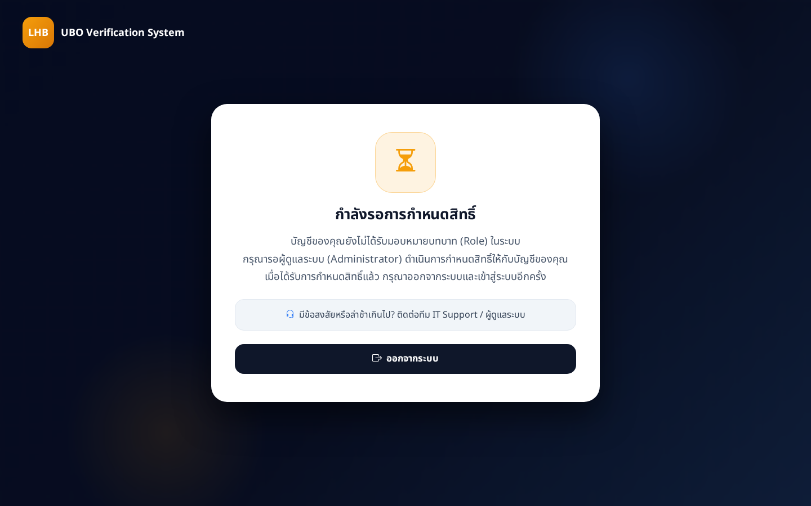
บทที่ 2 วิธีการใช้งานทั่วไป
เนื้อหาส่วนนี้สรุปวิธีใช้งานหลักของระบบ สำหรับใช้สอนผู้ใช้หรือตรวจสอบการทำงานด้วยตนเอง
2.1 เข้าสู่ระบบ
- 1. เปิดเว็บเบราว์เซอร์ไปที่ที่อยู่ระบบ กรอกอีเมลและรหัสผ่านที่หน้าแพลตฟอร์ม
- 2. กรอก Employee ID และรหัสผ่านที่หน้าเข้าสู่ระบบ UBO แล้วกดเข้าสู่ระบบ
- 3. หากกรอกรหัสผ่านผิด ระบบแสดงข้อความ Invalid credentials เหตุการณ์นี้จะถูกบันทึกลง System Log
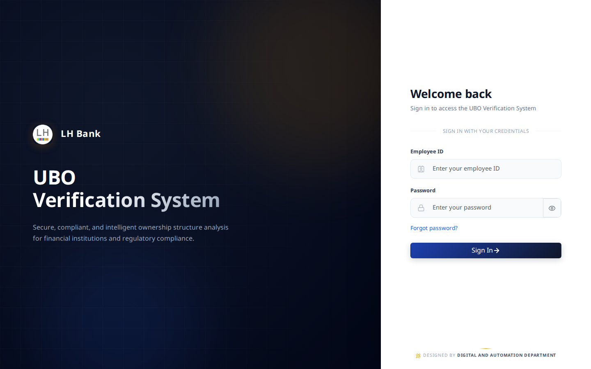
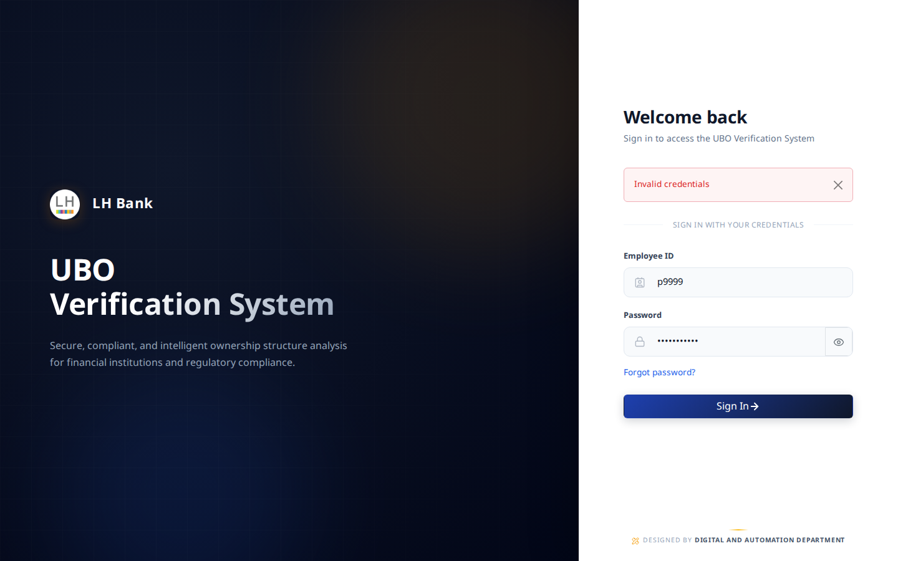
2.2 ค้นหาและดูผลการวิเคราะห์
- 1. ไปที่เมนู UBO Analysis กรอกเลขทะเบียนนิติบุคคล 13 หลัก แล้วกด เริ่มวิเคราะห์
- 2. ดูผลลัพธ์ที่แสดงครบทุกส่วน ได้แก่ข้อมูลบริษัท ตารางผู้ถือหุ้น Ownership Graph รายชื่อกรรมการและผู้มีอำนาจลงนาม
- 3. กดปุ่ม พิมพ์รายงาน เพื่อสร้างเอกสาร PDF ระบบจะแสดงเลขที่เอกสารกำกับทุกครั้ง
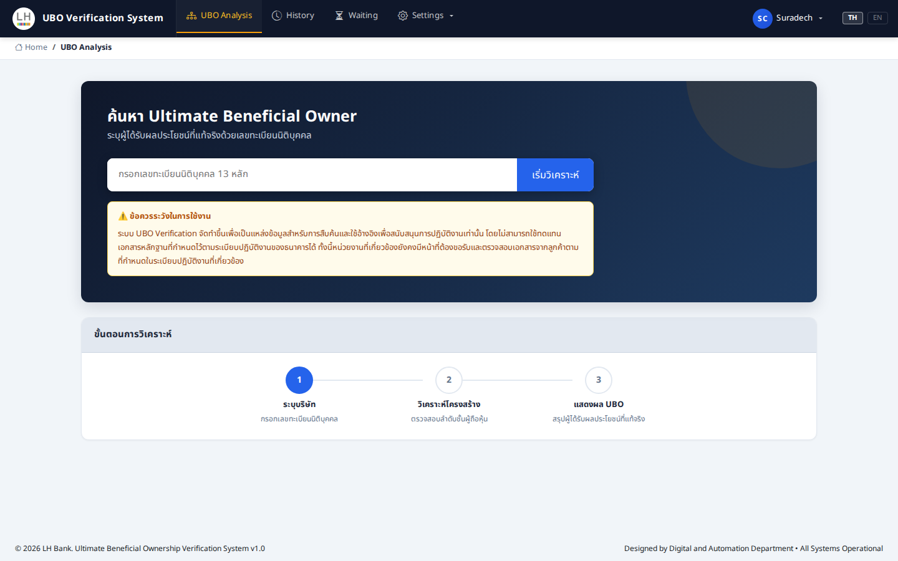
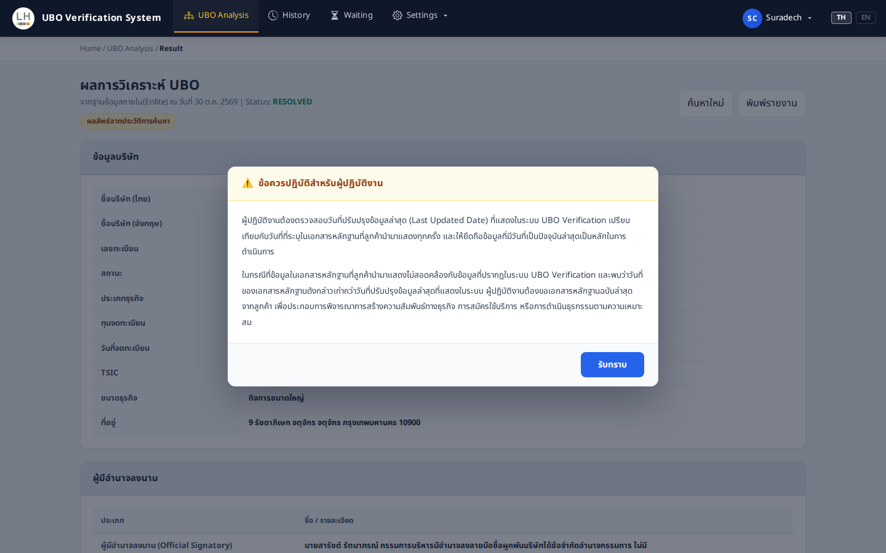
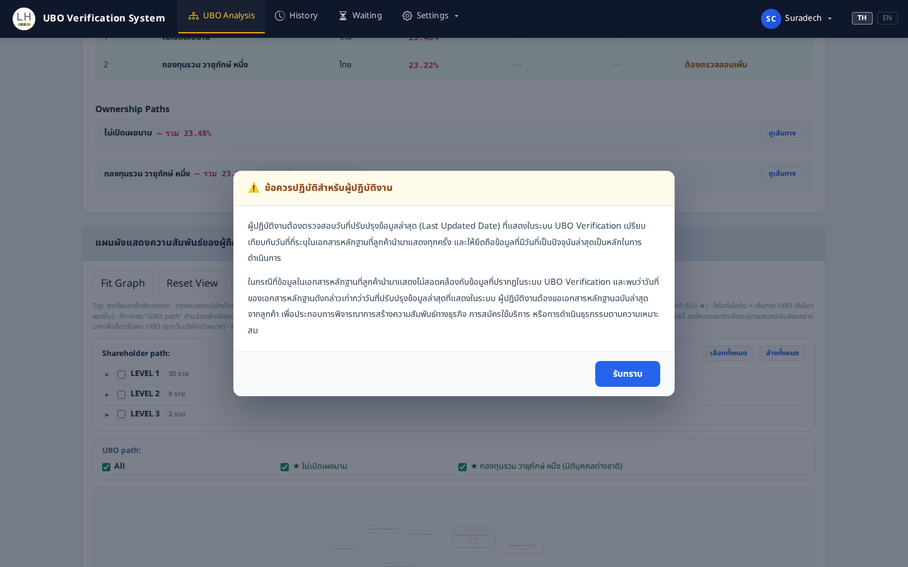
2.3 ตรวจประวัติและ Export
- 1. ไปที่เมนู History เพื่อดูรายการค้นหาย้อนหลัง ใช้ Filter ในการกรอง แล้วกดปุ่มรูปตาเพื่อเปิดดูรายละเอียด
- 2. กด Export Excel เพื่อดาวน์โหลดรายการเป็นไฟล์ Excel
- 3. กดปุ่มรูปเอกสารในแถวที่เคยพิมพ์รายงาน เพื่อเปิดเอกสาร PDF เดิม
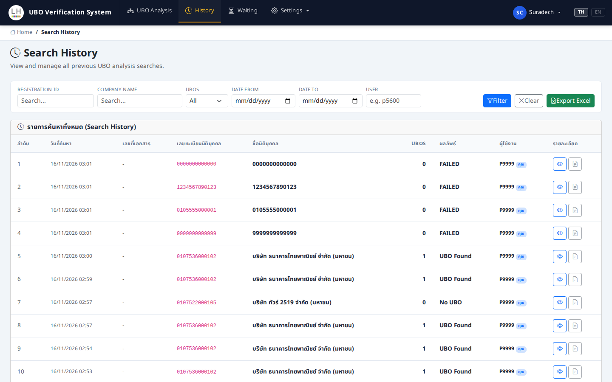
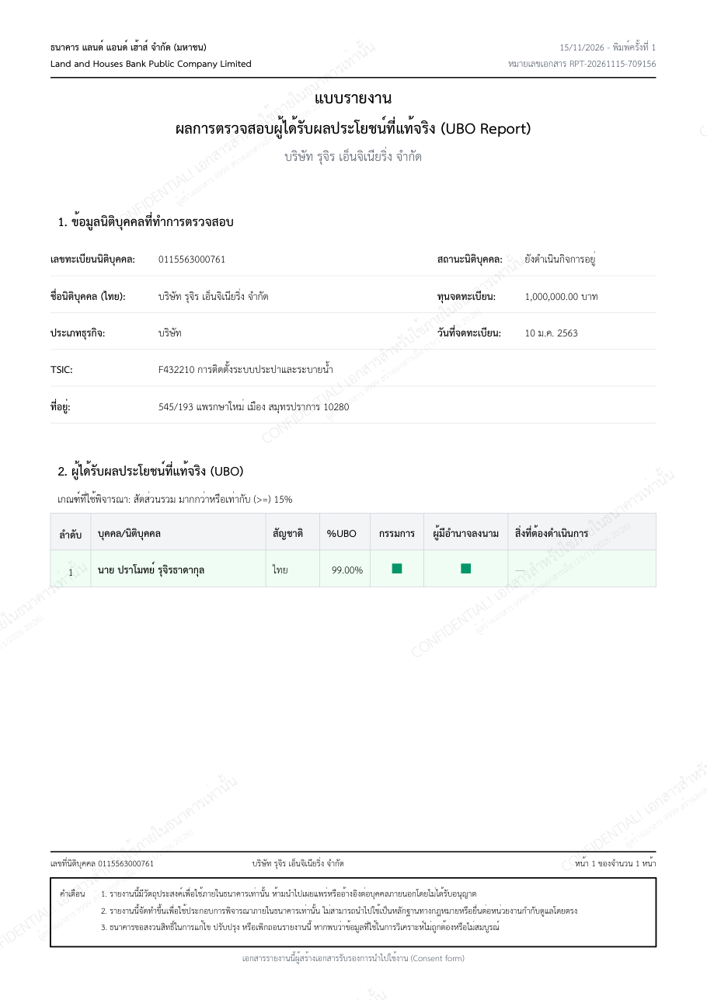
บทที่ 3 Waiting Queue และการมอบหมายกลุ่ม
หน้า Waiting แสดงคิวผู้ใช้ที่เข้าสู่ระบบแล้ว แต่ยังไม่มีกลุ่มหรือยังไม่มีบทบาท ผู้ดูแลใช้หน้านี้มอบหมายกลุ่มให้ผู้ใช้
3.1 การดูคิวผู้ใช้
- 1. ไปที่เมนู Waiting ที่ด้านบนของหน้าจอ
- 2. ตารางแสดง USER ID, FULLNAME, POSITION, DEPARTMENT, GROUPS, ROLE, FIRST LOGIN, LAST LOGIN และ STATUS
- 3. แถบสถิติด้านบนสรุปจำนวนผู้ใช้ที่รอ assign ผู้ใช้ที่ไม่มี Role และผู้ที่มี Role แล้ว
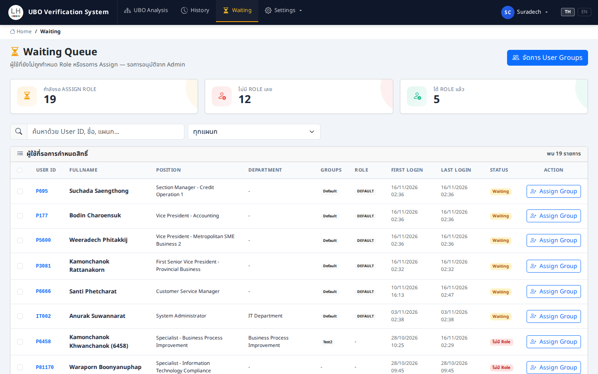
3.2 การมอบหมายกลุ่ม
- 1. ที่แถวของผู้ใช้ที่ต้องการ คลิกปุ่ม Assign Group
- 2. หน้าต่างมอบหมายกลุ่มจะแสดงรายการกลุ่มที่มีอยู่ในระบบ
- 3. เลือกกลุ่มที่ต้องการ แล้วกดยืนยัน ผู้ใช้จะได้รับสิทธิ์ตาม Role ของกลุ่มนั้นทันที
- 4. แจ้งให้ผู้ใช้ออกจากระบบและเข้าสู่ระบบใหม่ เพื่อให้สิทธิ์ใหม่มีผล
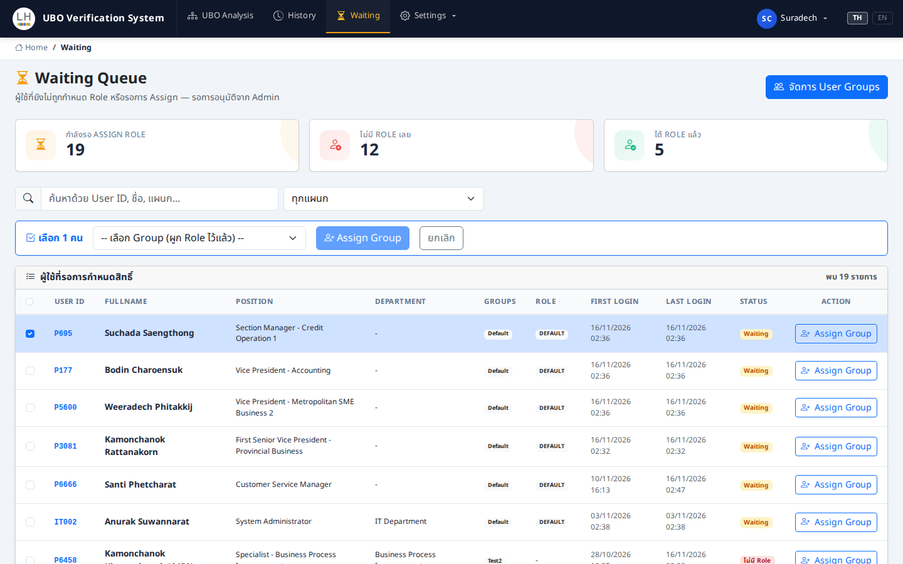
บทที่ 4 การสร้าง Role
หน้า Roles & Features ใช้สร้าง Role ใหม่ และกำหนด Permission ให้ Role ตามหลัก least privilege คือให้เฉพาะสิทธิ์ที่จำเป็น
4.1 ขั้นตอนการสร้าง Role
- 1. ไปที่เมนู Settings แล้วเลือก Roles & Features
- 2. ที่ฟอร์ม สร้าง Role ด้านบนของหน้า กรอกชื่อสิทธิ์ ระดับ Priority และคำอธิบาย
- 3. เลือก Permission จาก 4 กลุ่มฟังก์ชัน ด้วยการติ๊กเครื่องหมายหน้ารายการสิทธิ์ที่ต้องการ
- 4. กดปุ่ม สร้างสิทธิ์ เพื่อบันทึก ระบบแสดงข้อความยืนยันเมื่อสำเร็จ
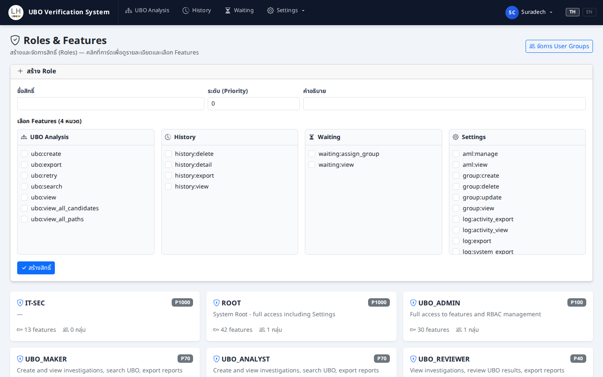
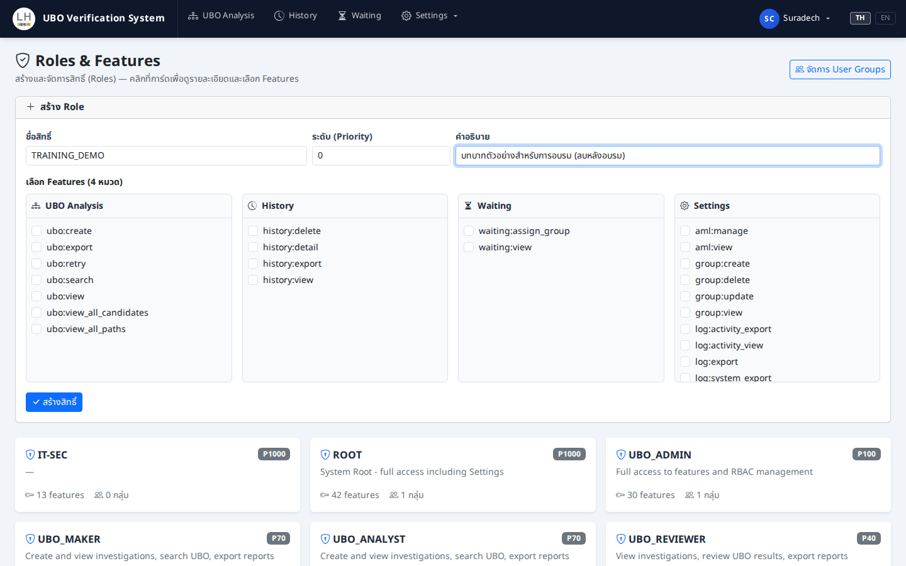
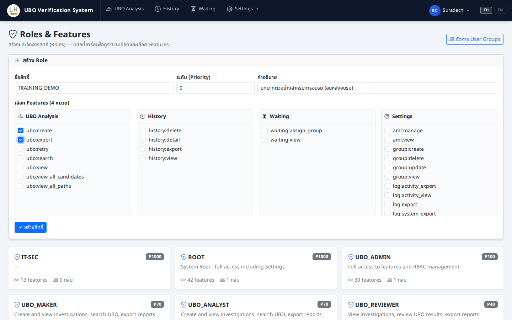
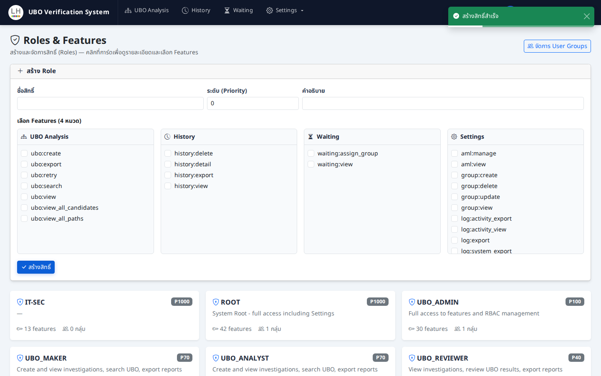
4.2 การแก้ไขสิทธิ์ของ Role
- 1. คลิกที่การ์ด Role ที่ต้องการแก้ไข แผงรายละเอียดจะแสดงด้านล่าง
- 2. ที่แผงรายละเอียดแก้ไขชื่อ คำอธิบาย หรือ Priority ได้ และติ๊กเพิ่มหรือยกเลิก Permission ได้จาก ส่วน Features ที่ Role ใช้ 4 หมวด
- 3. กดปุ่ม บันทึกสิทธิ์ เพื่อบันทึกการแก้ไข ระบบแสดงข้อความยืนยันเมื่อสำเร็จ
- 4. หากต้องการลบ Role กดปุ่ม ลบสิทธิ์ แล้วยืนยันในหน้าต่างแจ้งเตือน ปุ่มลบจะไม่แสดงสำหรับ Role ระบบ
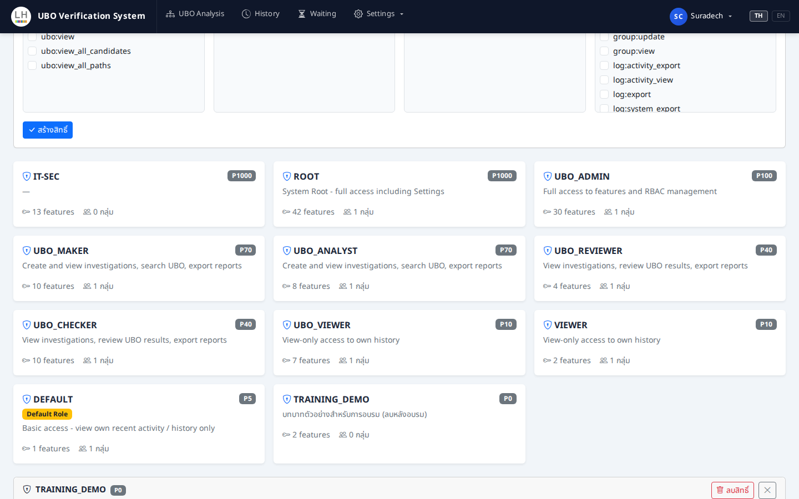
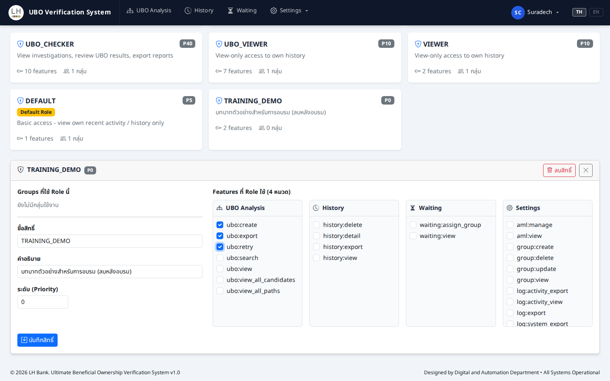
บทที่ 5 การสร้างและจัดการ User
ผู้ใช้ในระบบสร้างจาก 2 วิธี วิธีแรกคือการเข้าสู่ระบบครั้งแรกซึ่งระบบจะสร้างบัญชีอัตโนมัติ วิธีที่สองคือการอัปโหลดไฟล์ CSV เพื่อเพิ่มผู้ใช้หลายคนพร้อมกัน
5.1 วิธีที่ 1 การเข้าสู่ระบบครั้งแรก
- 1. ผู้ใช้เข้าสู่ระบบด้วย Employee ID และรหัสผ่านตามปกติ
- 2. ระบบจะสร้างบัญชีอัตโนมัติและเพิ่มเข้ากลุ่ม Default พร้อมบทบาท DEFAULT
- 3. ผู้ใช้จะเห็นหน้าจอรอการกำหนดสิทธิ์ จนกว่าผู้ดูแลจะมอบหมายกลุ่มที่มีบทบาทจริงให้
- 4. หลังมอบหมายกลุ่มแล้ว ให้ผู้ใช้ออกจากระบบ และเข้าสู่ระบบใหม่
5.2 วิธีที่ 2 การอัปโหลด CSV
- 1. ไปที่เมนู Settings แล้วเลือก User Groups กดปุ่ม Download Template เพื่อดาวน์โหลดไฟล์ตัวอย่าง
- 2. กรอกไฟล์ตามรูปแบบคอลัมน์ ได้แก่ No, User ID, Group Name และ Role คอลัมน์ No ใช้สำหรับอ้างอิงเท่านั้น
- 3. กดปุ่ม Upload แล้วเลือกไฟล์ CSV ที่กรอกเสร็จแล้ว
- 4. ระบบเพิ่มผู้ใช้ตามแถวในไฟล์ หากพบกลุ่มหรือ Role ที่ระบุไม่ถูกต้อง ระบบจะข้ามแถวนั้นและรายงานข้อผิดพลาดเป็นรายแถว
- 5. ตรวจสอบผลลัพธ์ที่แสดงหลังอัปโหลด จำนวนที่สำเร็จและจำนวนข้อผิดพลาด
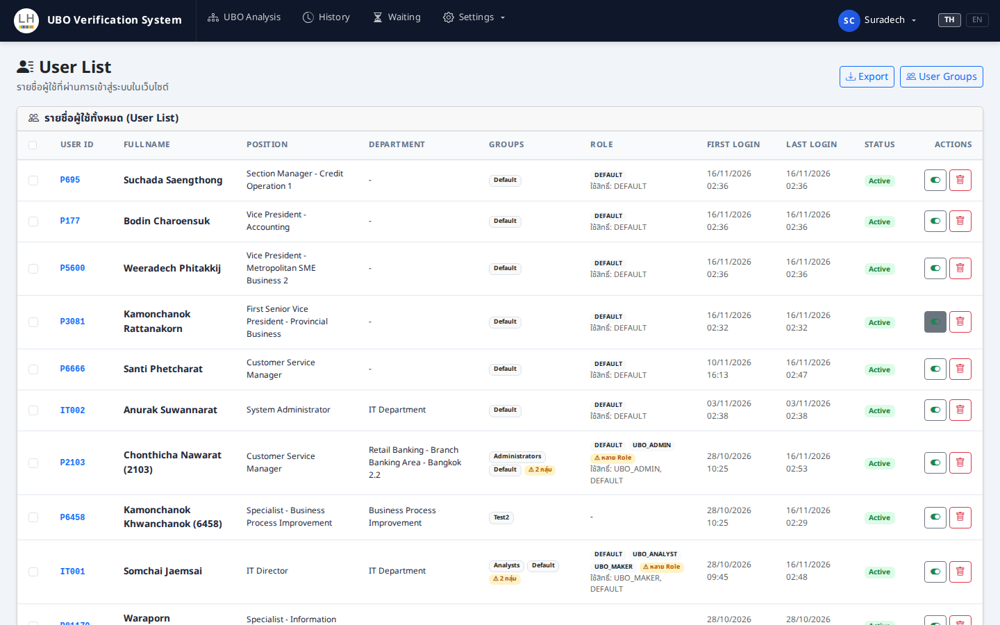
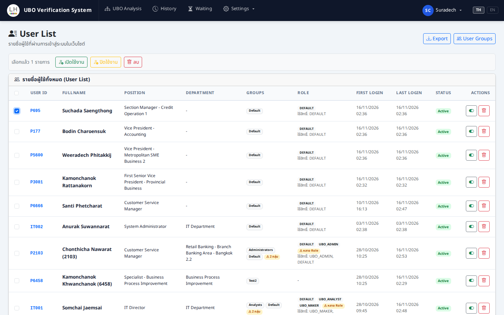
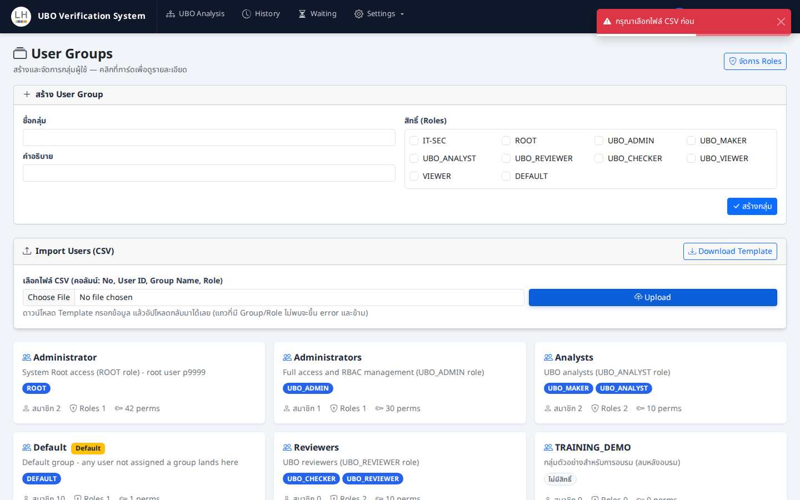
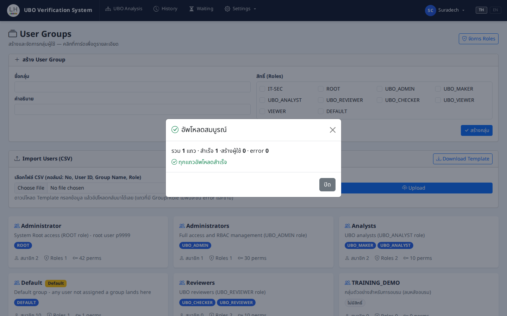
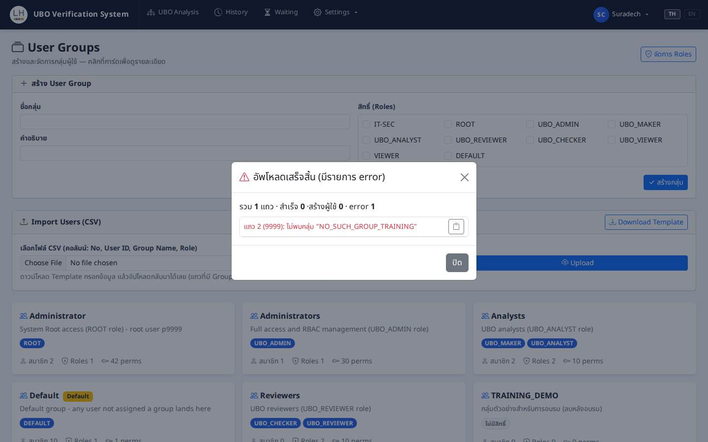
5.3 การเปิดปิดใช้งานและลบผู้ใช้
- 1. ที่หน้า User List ใช้สวิตช์ที่คอลัมน์ STATUS เพื่อเปิดหรือปิดใช้งานผู้ใช้รายตัว หรือเลือกหลายรายการแล้วดำเนินการแบบกลุ่ม
- 2. การปิดใช้งานจะทำให้ผู้ใช้ไม่สามารถใช้งานได้ แต่ข้อมูลยังอยู่ในระบบ
- 3. การลบผู้ใช้ให้กดปุ่มลบแล้วยืนยัน ระบบจะแจ้งเตือนว่าผู้ใช้จะถูกลบออกจากระบบ และเมื่อเข้าสู่ระบบครั้งถัดไปจะได้สิทธิ์เริ่มต้น
- 4. กดปุ่ม Export ที่หน้า User List เพื่อดาวน์โหลดข้อมูลผู้ใช้เป็นไฟล์ CSV
กฎระดับระบบกำหนดให้ผู้ใช้หนึ่งคนอยู่ในกลุ่มเดียว การเพิ่มผู้ใช้เข้ากลุ่มใหม่จะนำผู้ใช้ออกจากกลุ่มเดิมอัตโนมัติ ตรวจสอบกลุ่มปลายทางก่อนยืนยันทุกครั้ง
บทที่ 6 การสร้างและจัดการ User Group
หน้า User Groups ใช้สร้างกลุ่มใหม่ ผูก Role เข้ากับกลุ่ม จัดการสมาชิก และอัปโหลดสมาชิกจากไฟล์ CSV
6.1 การสร้างกลุ่มใหม่
- 1. ไปที่เมนู Settings แล้วเลือก User Groups
- 2. กดปุ่ม สร้างกลุ่ม กรอกชื่อกลุ่มและคำอธิบาย
- 3. กดปุ่มบันทึกเพื่อยืนยัน ระบบแสดงข้อความยืนยันเมื่อสำเร็จ และการ์ดกลุ่มใหม่จะปรากฏในรายการ
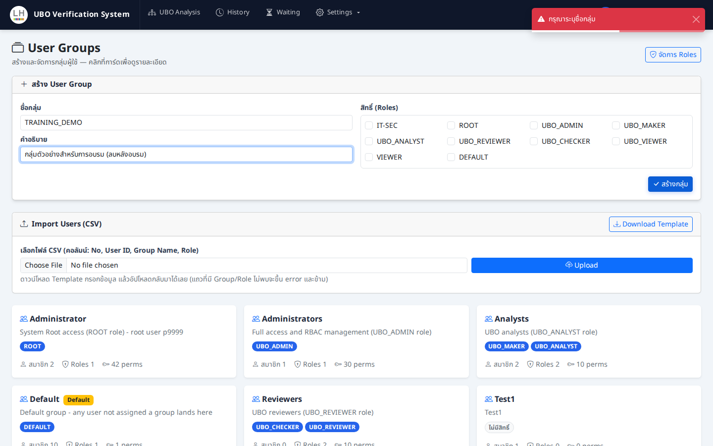
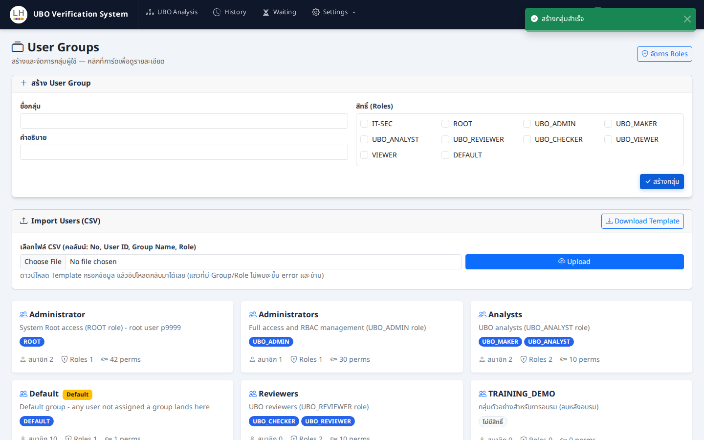
6.2 การดูรายละเอียดกลุ่ม
- 1. คลิกที่การ์ดกลุ่มเพื่อเปิดแผงรายละเอียด
- 2. แผงรายละเอียดแสดงชื่อกลุ่ม คำอธิบาย และสามารถแก้ไขแล้วกด บันทึกข้อมูลกลุ่ม ได้
- 3. ส่วน สิทธิ์ Roles ที่กลุ่มถือ แสดงรายการ Role ที่กลุ่มมีอยู่ พร้อมจำนวนสิทธิ์ที่ได้รับ
- 4. ส่วนสมาชิกแสดงรายชื่อสมาชิกของกลุ่ม พร้อมจำนวน Role และสิทธิ์ที่กลุ่มมี
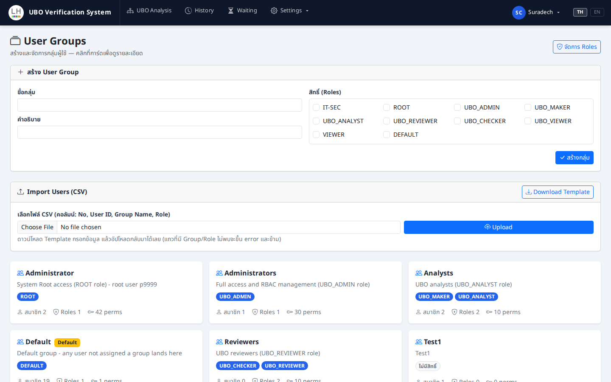
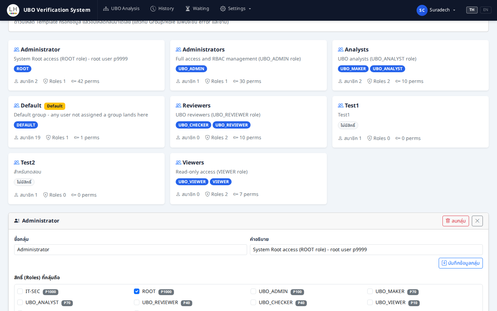
6.3 การจัดการสมาชิกในกลุ่ม
- 1. ที่แผงรายละเอียดกลุ่ม เลื่อนลงมาที่ส่วนสมาชิก
- 2. เลือกผู้ใช้ที่ต้องการเพิ่มเข้ากลุ่ม หรือกดปุ่มลบสมาชิกเพื่อนำออก การลบยังไม่หายจนกว่าจะกดบันทึก
- 3. กดปุ่ม บันทึกสมาชิก เพื่อยืนยันการเปลี่ยนแปลง ระบบแสดงข้อความยืนยันเมื่อสำเร็จ
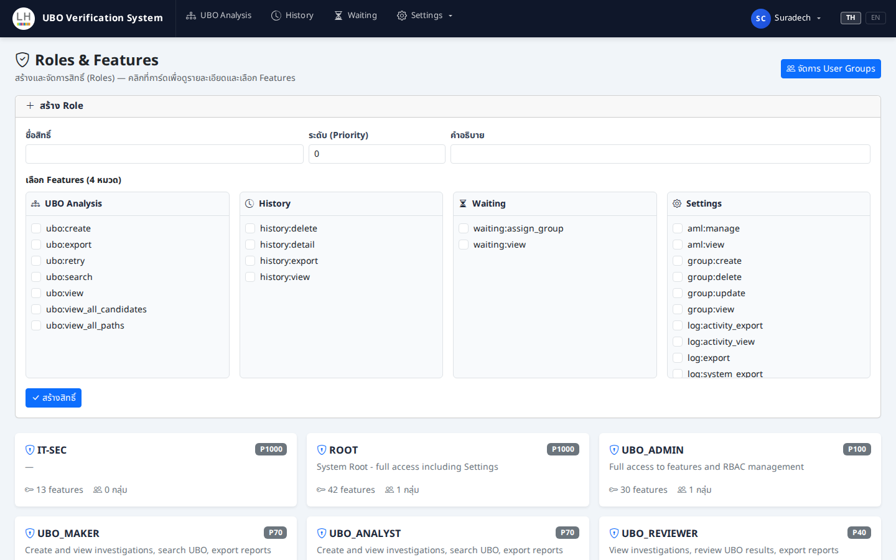
6.4 การอัปโหลดสมาชิกจากไฟล์ CSV
- 1. ที่หน้า User Groups กดปุ่ม Download Template เพื่อดาวน์โหลดไฟล์ตัวอย่าง
- 2. กรอกไฟล์ตามรูปแบบคอลัมน์ No, User ID, Group Name และ Role
- 3. กดปุ่ม Upload แล้วเลือกไฟล์ที่กรอกเสร็จแล้ว
- 4. ตรวจสอบผลลัพธ์หลังอัปโหลด ระบบแสดงจำนวนที่สำเร็จและรายงานข้อผิดพลาดเป็นรายแถว
รูปแบบไฟล์ CSV ใช้คอลัมน์ No, User ID, Group Name, Role แถวที่อ้างอิงกลุ่มหรือ Role ที่ไม่มีอยู่ จะถูกข้ามและรายงานเป็นข้อผิดพลาด ไฟล์ตัวอย่างจากปุ่ม Download Template เป็นแหล่งอ้างอิงที่แน่นอนที่สุด
บทที่ 7 การตรวจสอบยืนยันผล
หลังจัดสิทธิ์เสร็จ ควรตรวจสอบยืนยันว่า ผู้ใช้ได้รับสิทธิ์ถูกต้องตามที่กำหนด
7.1 ขั้นตอนตรวจสอบ
- 1. ให้ผู้ใช้ออกจากระบบแล้วเข้าสู่ระบบใหม่ เพื่อโหลดสิทธิ์ล่าสุด
- 2. ตรวจสอบว่าเมนูที่ผู้ใช้เห็นตรงกับที่กำหนดไว้ เช่นผู้ใช้ที่มีสิทธิ์ค้นหาควรมีเมนู UBO Analysis
- 3. ไปที่ System Log เพื่อดูรายการเข้าสู่ระบบ และยืนยันว่าไม่มีรายการเข้าสู่ระบบไม่สำเร็จที่ผิดปกติ
- 4. ไปที่ Activity Log เพื่อดูกิจกรรมของผู้ใช้ หลังเริ่มใช้งานจริง
- 5. หากผู้ใช้ยังเห็นหน้าจอรอการกำหนดสิทธิ์ ตรวจสอบว่ากลุ่มที่มอบหมายมี Role ที่ไม่ใช่ DEFAULT


7.2 เช็คลิสต์ก่อนส่งมอบสิทธิ์
- ผู้ใช้อยู่ในกลุ่มที่ถูกต้องตามบทบาทที่ตั้งใจให้
- กลุ่มนั้นถือ Role ที่มีสิทธิ์ครบตามที่ผู้ใช้ต้องใช้งาน
- ไม่มีสิทธิ์เกินจำเป็นตามหลัก least privilege
- ผู้ใช้ได้ออกจากระบบและเข้าสู่ระบบใหม่หลังแก้สิทธิ์
- มีบันทึกยืนยันใน System Log ว่ามีการแก้ไข